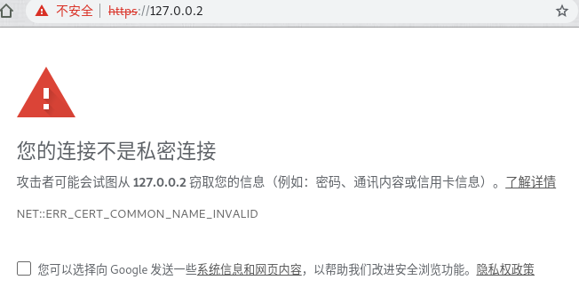

使用mkcert创建自签名证书
m3ng9i 发表于
本文地址： mengqi.info/html/2019/201905021220-use-mkcert-to-create-a-self-signed-certificate.html
在做程序开发的时候，免不了要接触https加密通信，你可能需要自己生成证书，虽然可以使用openssl完成这个工作，但是openssl是一个庞大和复杂的工具，有着令人眼花缭乱的参数，如果你没有太多的密码学知识，只是为了在本机生成一个自签名证书，方便自己开发和测试，那么可以试一试这个用Go语言写的命令行工具：mkcert，非常简单易用。
mkcert的Github地址：https://github.com/FiloSottile/mkcert，该项目有18000多颗星，作者Filippo Valsorda在2018年加入了Go的开发团队。关于mkcert，作者给出的一句话介绍：
mkcert is a simple tool for making locally-trusted development certificates. It requires no configuration.
作者提供了编译好的二进制程序，包含Linux/Windows/macOS三个版本，可直接下载使用：https://github.com/FiloSottile/mkcert/releases。你也可以使用brew安装，或者通过源码编译，具体详见作者在Github上面的说明。
下面，我以debian linux为例，介绍一下mkcert 1.3的使用方式：
将mkcert下载以后，放到一个合适的地方，并添加执行权限：
ln -s ~/download/mkcert-v1.3.0-linux-amd64 ~/bin/mkcert chmod u+x ~/bin/mkcert在linux下，mkcert依赖certutil，如果没有安装certutil，可以使用下面的命令安装：
sudo apt install libnss3-tools生成CA（certificate authority，即证书颁发机构），运行下面的命令可以在
~/.local/share/mkcert/生成rootCA.pem和rootCA-key.pem两个文件，这个命令只需运行一次，因为生成的CA可以反复使用；mkcert -install创建自签名证书，例如要为域名：
test.local和IP：127.0.0.1创建证书，可以使用如下的命令：mkcert test.local 127.0.0.1上述命令会自动使用第3步创建的CA生成证书文件，其中
xxx.pem为证书，xxx-key.pem为私钥，你也可以使用-cert-file和-key-file两个参数设置生成文件的文件名。
生成了证书和私钥以后，就可以在web服务器开启https了。
以我自己的web服务器ran为例，可以使用-cert和-key参数设置证书和私钥的路径，这时会默认在443端口开启web服务（使用较低的端口需要使用管理员权限），具体命令如下：
sudo ran -l -cert /path/to/cert -key /path/to/key
接下来，可以打开浏览器测试一下了：
从上图可以看到，chrome浏览器地址栏中显示了一把小锁，表示是安全的连接。如果把地址修改成 https://127.0.0.2，浏览器就会提示为不安全的连接，这是因为刚才使用mkcert创建证书的时侯，并没有设置127.0.0.2这个地址。

在使用mkcert的过程中，我发现了一个问题：虽然生成的证书在浏览器里会显示为安全的，但是使用curl测试的时候却报错了，意思大概就是找不到自建的CA：
$ curl https://127.0.0.1
curl: (60) SSL certificate problem: unable to get local issuer certificate
More details here: https://curl.haxx.se/docs/sslcerts.html
curl failed to verify the legitimacy of the server and therefore could not
establish a secure connection to it. To learn more about this situation and
how to fix it, please visit the web page mentioned above.
我在终端里找到了刚才运行mkcert -install时出现的提示：
Using the local CA at "/home/<user>/.local/share/mkcert"
Installing to the system store is not yet supported on this Linux but Firefox and/or Chrome/Chromium will still work.
You can also manually install the root certificate at "/home/<user>/.local/share/mkcert/rootCA.pem".
The local CA is now installed in the Firefox and/or Chrome/Chromium trust store (requires browser restart)!
里面有一句：Installing to the system store is not yet supported on this Linux。
好吧，那么我来手工安装一下刚才生成的CA（以下命令均需要用管理员权限运行）：
进入
/usr/share/ca-certificates文件夹，创建一个新文件夹local，在这个文件夹中创建一个指向mkcert生成的证书的软链接：cd /usr/share/ca-certificates mkdir local cd local ln -s /home/<user>/.local/share/mkcert/rootCA.pem my-local-ca.crt编辑文件
/etc/ca-certificates.conf，添加一行：local/my-local-ca.crt运行下面的命令：
update-ca-certificates
这样，使用curl连接的时候就没有报错了：
$ curl https://127.0.0.1
<h1>hello world</h1>